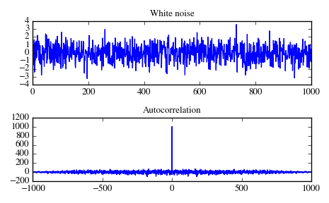
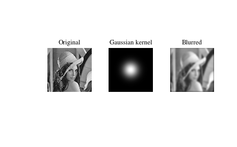

scipy.signal.fftconvolve¶
- scipy.signal.fftconvolve(in1, in2, mode='full')[source]¶
Convolve two N-dimensional arrays using FFT.
Convolve in1 and in2 using the fast Fourier transform method, with the output size determined by the mode argument.
This is generally much faster than convolve for large arrays (n > ~500), but can be slower when only a few output values are needed, and can only output float arrays (int or object array inputs will be cast to float).
Parameters: in1 : array_like
First input.
in2 : array_like
Second input. Should have the same number of dimensions as in1; if sizes of in1 and in2 are not equal then in1 has to be the larger array.
mode : str {‘full’, ‘valid’, ‘same’}, optional
A string indicating the size of the output:
- full
The output is the full discrete linear convolution of the inputs. (Default)
- valid
The output consists only of those elements that do not rely on the zero-padding.
- same
The output is the same size as in1, centered with respect to the ‘full’ output.
Returns: out : array
An N-dimensional array containing a subset of the discrete linear convolution of in1 with in2.
Examples
Autocorrelation of white noise is an impulse. (This is at least 100 times as fast as convolve.)
>>> from scipy import signal >>> sig = np.random.randn(1000) >>> autocorr = signal.fftconvolve(sig, sig[::-1], mode='full')
>>> import matplotlib.pyplot as plt >>> fig, (ax_orig, ax_mag) = plt.subplots(2, 1) >>> ax_orig.plot(sig) >>> ax_orig.set_title('White noise') >>> ax_mag.plot(np.arange(-len(sig)+1,len(sig)), autocorr) >>> ax_mag.set_title('Autocorrelation') >>> fig.tight_layout() >>> fig.show()
Gaussian blur implemented using FFT convolution. Notice the dark borders around the image, due to the zero-padding beyond its boundaries. The convolve2d function allows for other types of image boundaries, but is far slower.
>>> from scipy import misc >>> lena = misc.lena() >>> kernel = np.outer(signal.gaussian(70, 8), signal.gaussian(70, 8)) >>> blurred = signal.fftconvolve(lena, kernel, mode='same')
>>> fig, (ax_orig, ax_kernel, ax_blurred) = plt.subplots(1, 3) >>> ax_orig.imshow(lena, cmap='gray') >>> ax_orig.set_title('Original') >>> ax_orig.set_axis_off() >>> ax_kernel.imshow(kernel, cmap='gray') >>> ax_kernel.set_title('Gaussian kernel') >>> ax_kernel.set_axis_off() >>> ax_blurred.imshow(blurred, cmap='gray') >>> ax_blurred.set_title('Blurred') >>> ax_blurred.set_axis_off() >>> fig.show()
